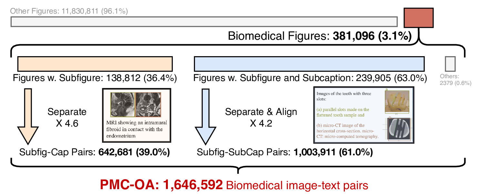
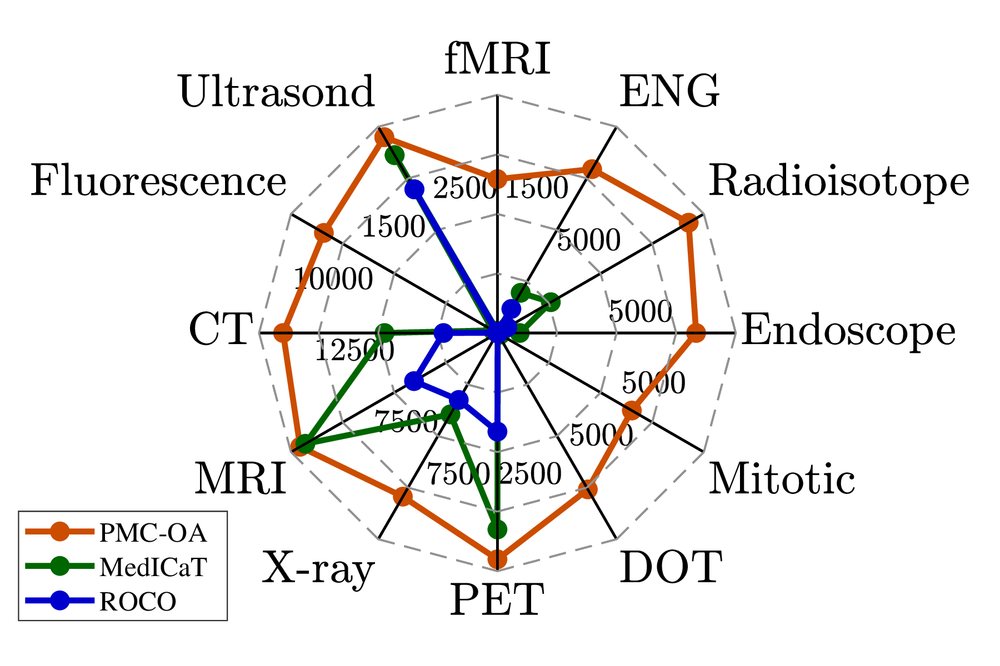
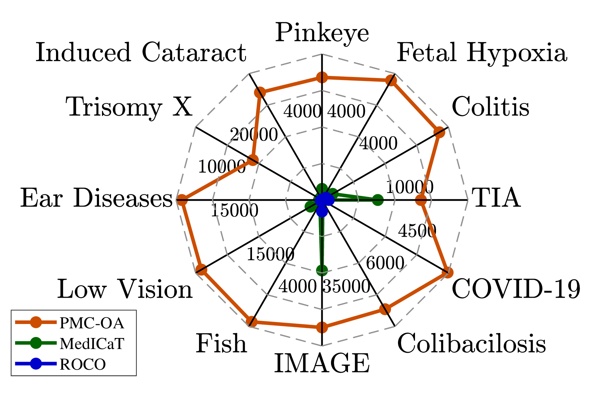
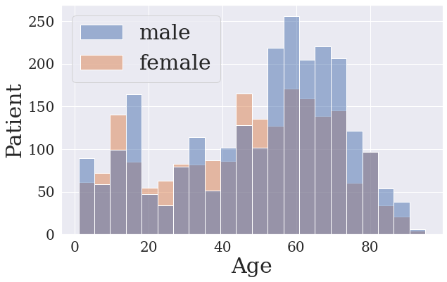
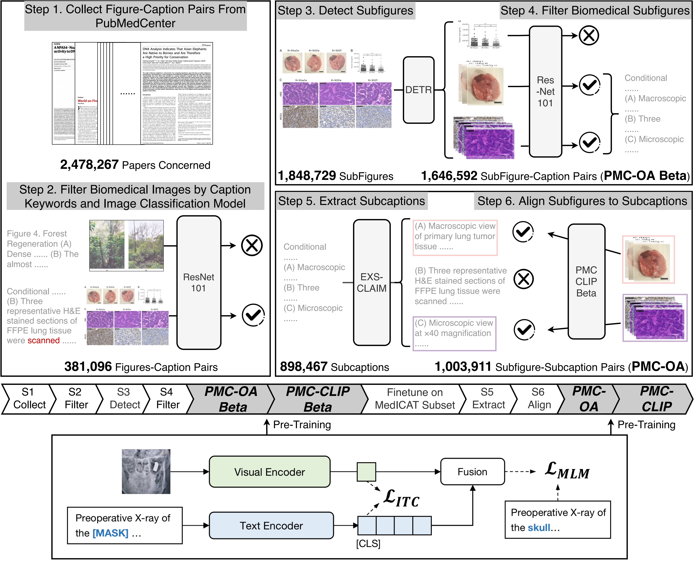
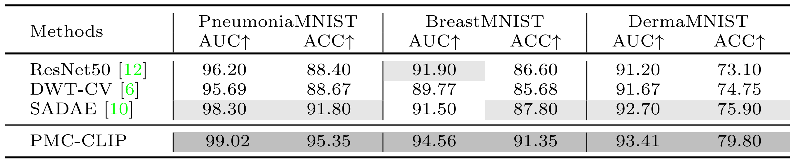

Foundation models trained on large-scale dataset gain a recent surge in CV and NLP. In contrast, development in biomedical domain lags far behind due to data scarcity. To address this issue, we build and release PMC-OA, a biomedical dataset with 1.6M image-caption pairs collected from PubMedCentral's OpenAccess subset, which is 8 times larger than before. PMC-OA covers diverse modalities or diseases, with majority of the image-caption samples aligned at finer-grained level, i.e., subfigure and subcaption. While pretraining a CLIP-style model on PMC-OA, our model named PMC-CLIP achieves state-of-the-art results on various downstream tasks, including image-text retrieval on ROCO, MedMNIST image classification, Medical VQA, i.e. +8.1% R@10 on image-text retrieval, +3.9% accuracy on image classification.
Dataset Statistics Over the Pipeline
Only 3.1% images of all are kept as biomedical figures.
For figures with multiple pannels, we link subfigures with subcaptions to generate aligned samples.
At last, 1.65M image-text pairs are left in PMC-OA

Dataset Overview
First, PMC-OA covers a wide range of diagnostic procedures, spanning from common (CT, MRI) to rare ones (mitotic figure), which is more diverse than before (Fig. (a)).
Second, PMC-OA contains various diseases and findings, and is more up-to-date, covering new emergent diseases like COVID-19 (Fig. (b)).
Third, The sex-ratio across ages are shown in Fig. (c), as we can see PMC-OA is approximately gender-balanced, with 54% males.

(a) Diagnostic procedure

(b) Disease and findings

(c) Patients' age & gender
Pipeline
Overview of the pipeline.
(Top.) Collect image-caption dataset(PMC-OA) from biomedical documents.
(Bottom.) Pretrain PMC-CLIP on PMC-OA.

Results
We evaluate PMC-CLIP on three downstream tasks: Image-text Retrieval, Medical Image Classification, Medical VQA.
R1: Image-text Retrieval
PMC-CLIP achieves a state-of-the-art result on image-text retrieval. On I2T Rank@10, PMC-CLIP outperforms previous state-of-the-art by 8.1%.
Since our dataset does not contain data from ROCO, the reported results resembles zero-shot evaluation.
Dark and light grey colors high-light the top and second best results on each metric.
R2: Medical Image Classification
PMC-CLIP achieves SOTA on MedMNIST. We only report three out of the twelve 2D-subset in MedMNIST here.

R3: Medical VQA
VQA requires model to learn finer grain visual and language representations. PMC-CLIP surpass SOTA method M3AE in 5 out of 6 results.